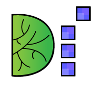

<mat-sidenav-container class="sidenav-container">
  <mat-sidenav #drawer class="sidenav" [ngClass]="{hidden: !(isHandset$ | async)}" fixedInViewport="false"
    [attr.role]="(isHandset$ | async) ? 'dialog' : 'navigation'" [mode]="(isHandset$ | async) ? 'over' : 'side'"
    [opened]="(isHandset$ | async) === false">
    <mat-toolbar>Menu</mat-toolbar>
    <mat-nav-list>
      <a routerLinkActive="active" [routerLinkActiveOptions]="{exact: true}" routerLink="" class="nav-link">Home</a>

      <a routerLinkActive="active" [routerLinkActiveOptions]="{exact: true}" routerLink="aboutus" class="nav-link">About
        Us</a>
      <a routerLinkActive="active" [routerLinkActiveOptions]="{exact: true}" routerLink="events" class="nav-link">Our
        Events</a>
      <a routerLinkActive="active" [routerLinkActiveOptions]="{exact: true}" routerLink="blog" class="nav-link">Blog</a>
      <a routerLinkActive="active" [routerLinkActiveOptions]="{exact: true}" routerLink="contactus"
        class="nav-link">Contact</a>
      <a *ngIf="authService.loggedIn" routerLinkActive="active" [routerLinkActiveOptions]="{exact: true}"
        routerLink="admin" class="nav-link">Admin Panel</a>
      <a *ngIf="authService.loggedIn" (click)="logout()" routerLink="contactus" class="nav-link">Log Out</a>
      <a *ngIf="!authService.loggedIn" routerLinkActive="active" [routerLinkActiveOptions]="{exact: true}"
        routerLink="auth" class="nav-link ml-3">
        <mat-icon>account_circle</mat-icon>
      </a>
    </mat-nav-list>
  </mat-sidenav>
  <mat-sidenav-content>
    <mat-toolbar style="z-index: 100; background-color: #21323b;">
      <button type="button" aria-label="Toggle sidenav" mat-icon-button (click)="drawer.toggle()"
        *ngIf="isHandset$ | async">
        <mat-icon style="color: white;" aria-label="Side nav toggle icon">menu</mat-icon>
      </button>
      <span>
        <a routerLink="" class="text-white">
          
          Developed India
        </a>
      </span>
      <span class="spacer"></span>
      <div *ngIf="!(isHandset$ | async)">
        <a routerLinkActive="active" [routerLinkActiveOptions]="{exact: true}" routerLink="" class="nav-link">Home</a>

        <a routerLinkActive="active" [routerLinkActiveOptions]="{exact: true}" routerLink="aboutus"
          class="nav-link">About
          Us</a>
        <a routerLinkActive="active" [routerLinkActiveOptions]="{exact: true}" routerLink="events" class="nav-link">Our
          Events</a>
        <a routerLinkActive="active" [routerLinkActiveOptions]="{exact: true}" routerLink="blog"
          class="nav-link">Blogs</a>
        <a routerLinkActive="active" [routerLinkActiveOptions]="{exact: true}" routerLink="contactus"
          class="nav-link">Contact</a>
        <a *ngIf="!authService.loggedIn" routerLinkActive="active" [routerLinkActiveOptions]="{exact: true}"
          routerLink="auth" class="nav-link">
          <mat-icon>account_circle</mat-icon>
        </a>
        <a *ngIf="authService.loggedIn" routerLinkActive="active" [routerLinkActiveOptions]="{exact: true}"
          routerLink="admin" class="nav-link">Admin Panel</a>
        <a *ngIf="authService.loggedIn" class="nav-link hyperlink" style="color: white;" [matMenuTriggerFor]="menu">
          {{currentUser}}
        </a>
        <mat-menu #menu="matMenu">
          <a *ngIf="authService.loggedIn" (click)="logout()"
           routerLink="contactus" class="nav-link">
           Log Out
          </a>
        </mat-menu>

      </div>
    </mat-toolbar>
    <!-- Add Content Here -->
    <ng-content></ng-content>
  </mat-sidenav-content>
</mat-sidenav-container>